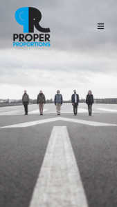
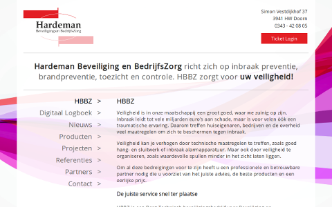

Press Start
(There is also a menu...)
About
How good of you to stop by! I am a web developer, currently living and moisturizing in Berlin. (Wait! ...That escalated quickly! Note to self: "Remove first sentence before it goes online!").
Oh, look! It seems like I did not remove the first sentence after all! Oh well, what a bummer! I guess there are no way for me to change that now... I see, you are more interested in knowing about me, rather than reading random things that I simply cannot resist to type down for my own amusement?
Back to the topic: I am a web developer - self-taught and highly motivated to develop not only web applications and web sites, but also myself. I come from a professional background as a librarian as well as a technical support agent. But ever since I discovered my affinity towards web tech, I haven't looked back.
I have working knowledge and experience in JavaScript, PHP, and MySQL. But my knowledge is constantly increasing! Some of the projects I have been involved in are static web sites, web applications, and Wordpress theme building, as well as some small personal projects. Feel free to have a look at my portfolio page for more details about that! - Or download my CV!
I am happily devoting most of my time to programming, but I also play music and is a devoted retro video games collector (hence the font, just in case you are wondering!).
You can of course hire me!
Portfolio
Project: To the Point Design
Tech used: HTML5, CSS3, vanilla JavaScript, PHP
Notes: Co-designed with Yoran Heij.
Website: www.tothepointdesign.eu
Screenshots:
Project: Proper Proportions - Official Band page
Tech used: HTML5, CSS3, vanilla JavaScript, PHP
Notes: Not officially launched, published under agreement. Might have issues on older browsers.
Website: www.jnolander.com/pp
Screenshots:
Project: Mimmo Catania
Tech used: HTML5, CSS3, vanilla JavaScript
Notes: Co-designed with Yoran Heij.
Website: www.mimmocatania.com
Screenshots:
Project: Hardeman - Beveiliging en BedrijfsZorg
Tech used: HTML5, CSS3, vanilla JavaScript, PHP
Notes: Co-designed with Yoran heij. Main responsibility was a back-end ticket system
Website: www.hbbz.nl
Screenshots:
Contact
(+49) (0)1573 2435 444
Email:jonas.nolander@gmail.com
Other
Here is a collection of links and other resources.
Sources
GithubCurrenty a bit empty... But I am working on it!
My CVAvailible as pdf. If any other format/language is wished for, please let me know!
Recommended links
To The Point DesignWeb design company run by good friend Yoran Heij